Amazon no longer sits with the mega caps. Before, the set was built by industry label and a size band, so AMZN's ten were SPCX, MSFT, META, GOOG, GOOGL, AVGO, AAPL, TSLA, NVDA, MU — SpaceX, Micron and Tesla in, Alibaba and JD out. Now the set is built from what each company actually sells: FMP's revenue-by-segment, read on Fly for the 455 served companies, gives Amazon e-commerce 69%, cloud 18%, advertising 10%; a peer is in when at least 15 cents of every revenue dollar sit in a business it shares with the company, size is only a small tie-breaker (never a gate), and every business the company has at 15% or more seats its two best peers. AMZN's twelve are now BABA, SHOP, GOOGL, MSFT, PDD, MELI, JD, WMT, COST, HD, TJX, LOW. The system catches outliers by itself (a peer more than 3 MAD from the pack on a log scale, per measure — ARM at 317× P/E, Gilead at 273× EV/EBITDA, PDD at 1.2× P/E), keeps them out of the centre and off the scale, and lets Alan keep one with a click. The price is no longer "the middle of six medians": every peer's implied price on every measure is a point, weighted by a stated measure weight and a stated peer weight; the centre is the weighted median of all of them, and the midpoint is printed beside it so the two are never confused. PEG is computed from forward consensus growth (AMZN: 8.4% a year to FY2029, PEG 2.35×). Every explanatory sentence moved into PAGE SPECS at the bottom of the tab.
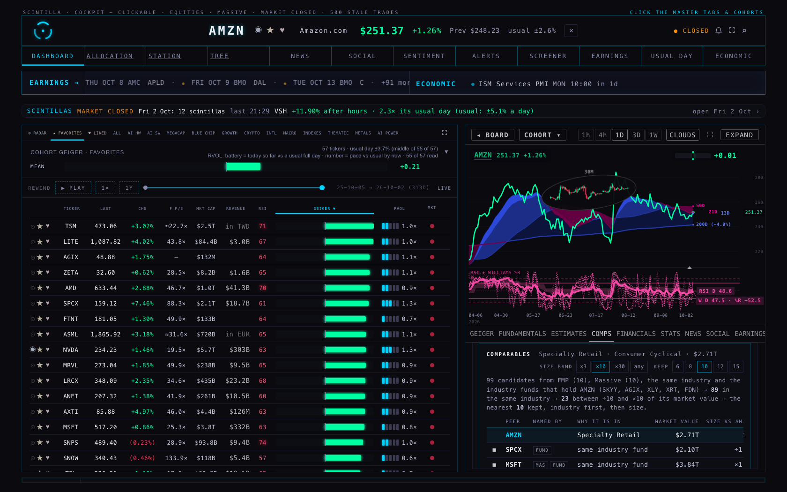
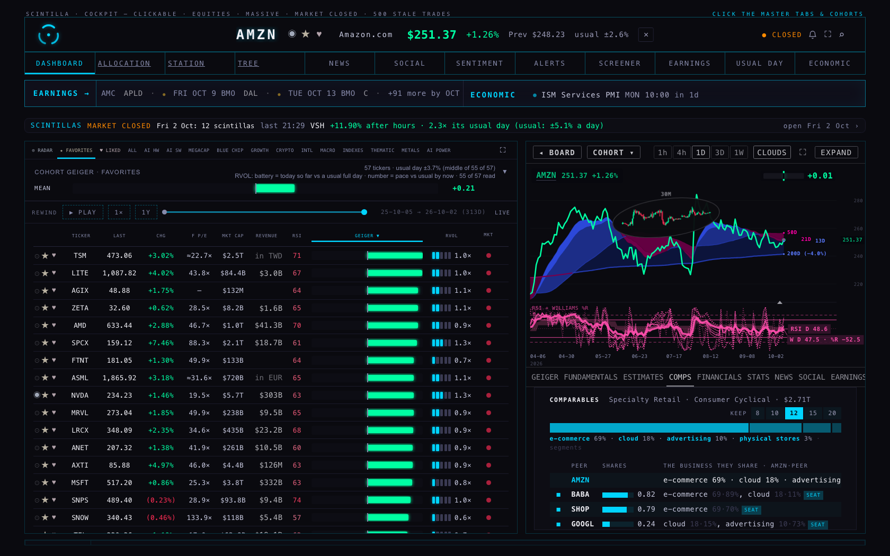
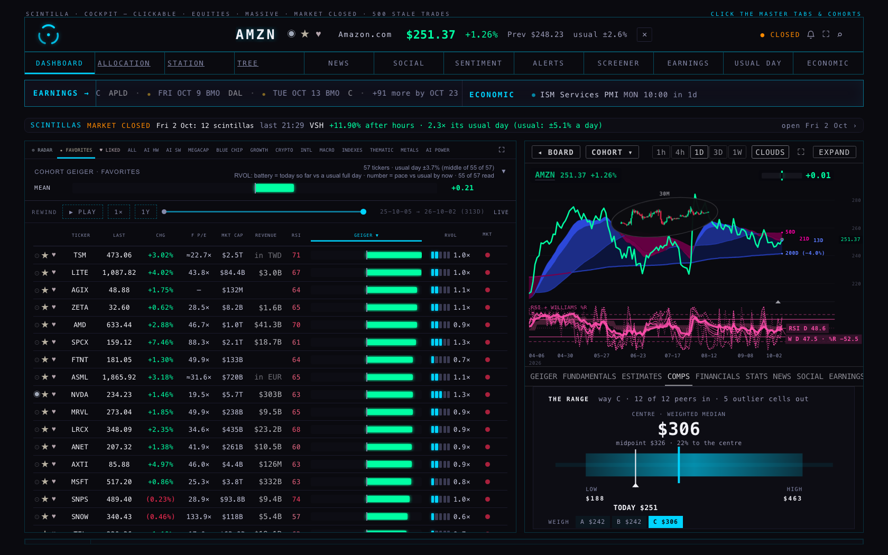
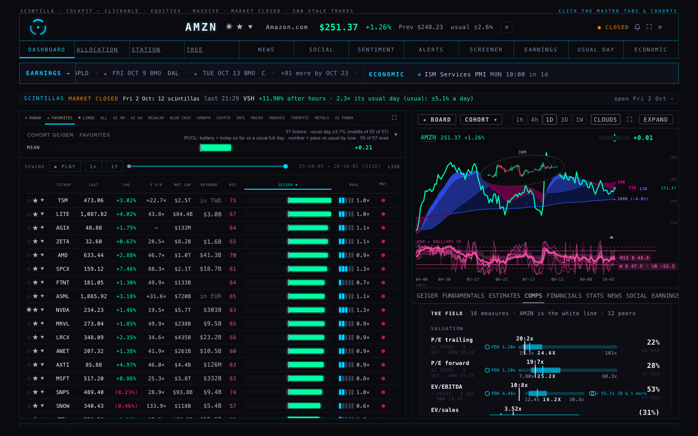
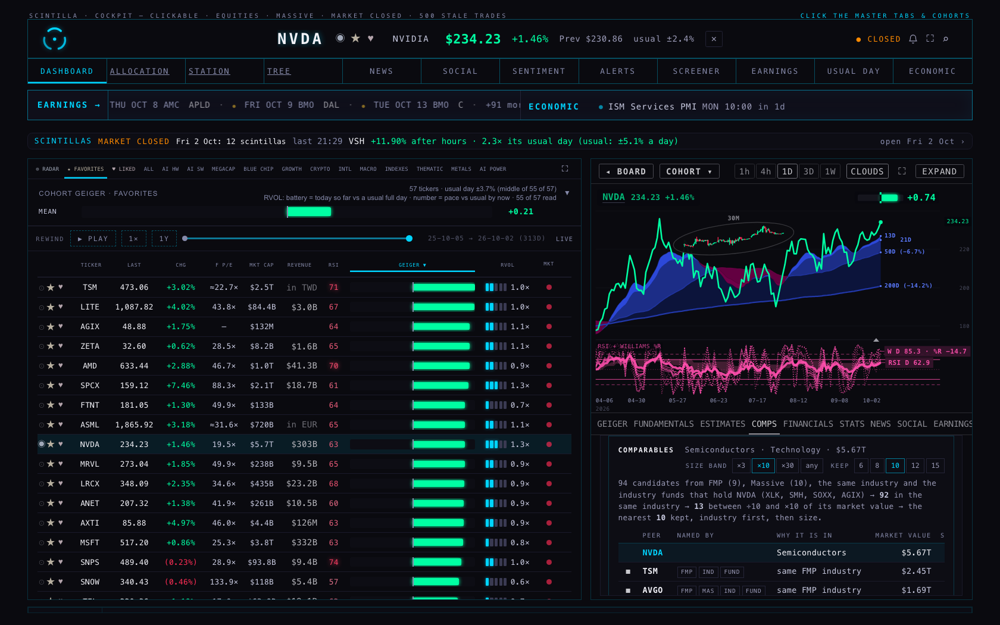
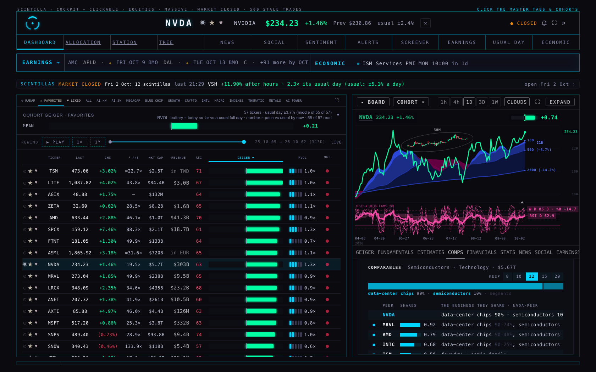
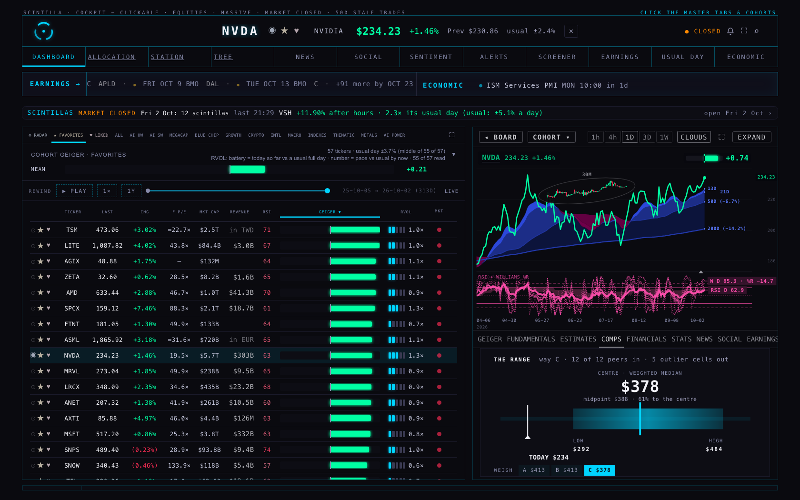
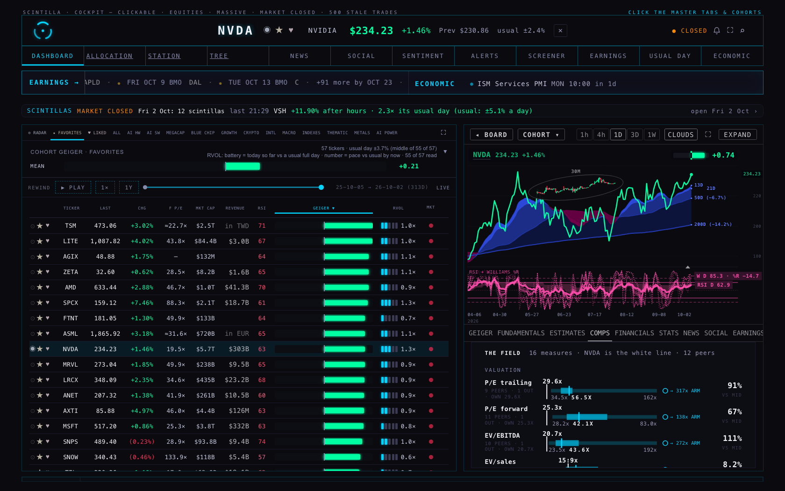
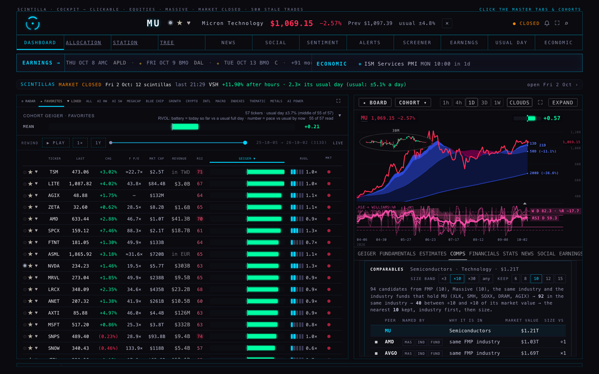
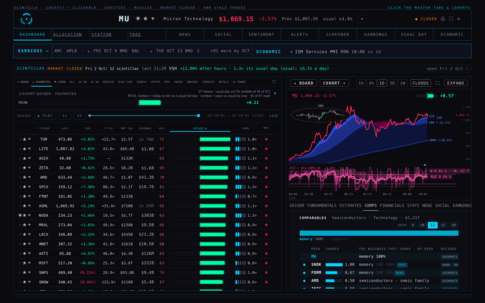
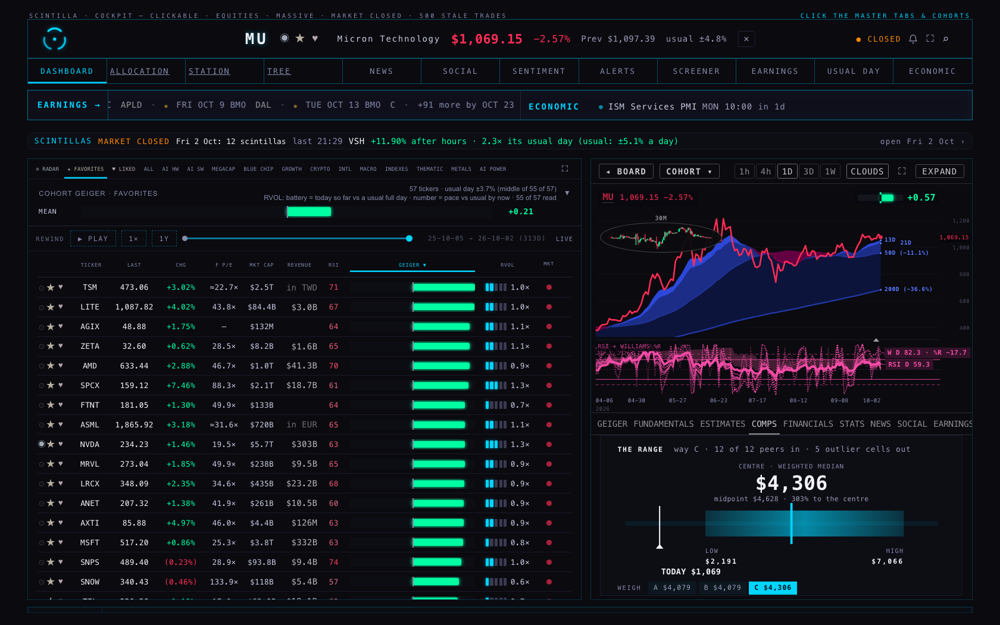
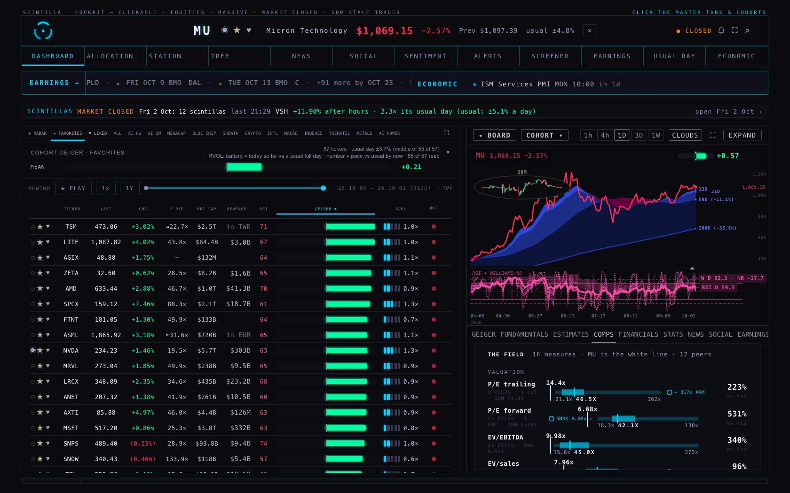
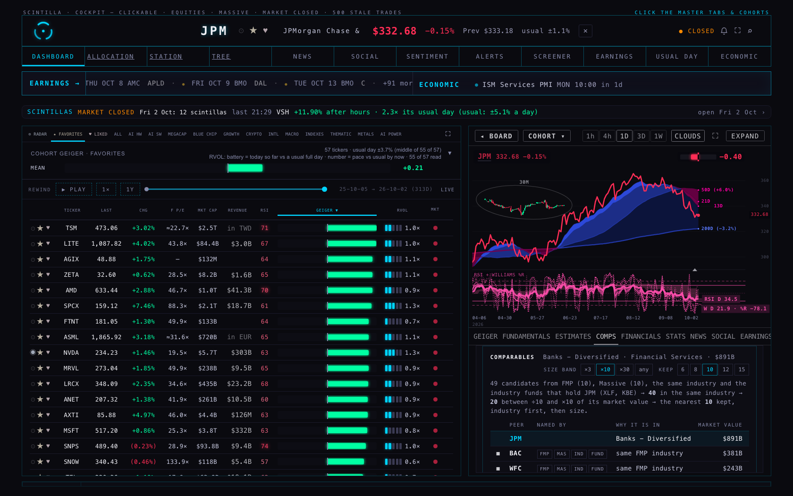
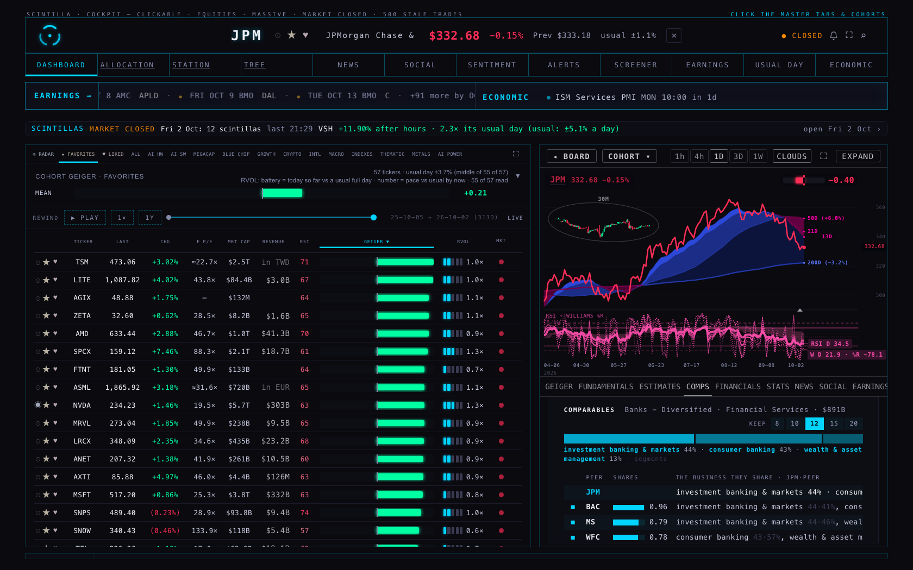
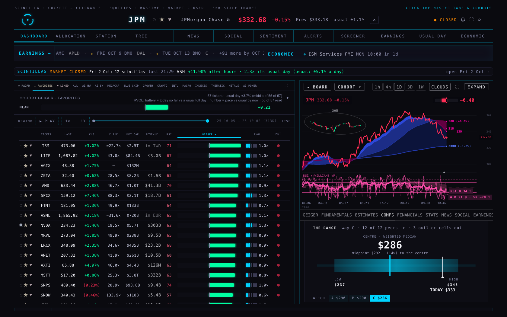
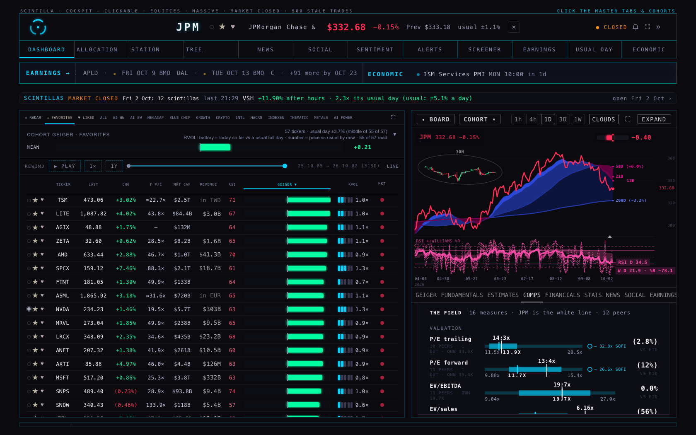
AMZN, way C centre: $308 → $304 (C5 as returned: $311)
AMZN's outliers before: PDD 1.20× P/E · PDD 1.10× P/E FWD · BABA 86.8× EV/EBITDA
after: PDD 4.54× EV/EBITDA · JD 0.19× EV/S · JD 0.19× P/S · SHOP 11.2× P/S
| Company | Reports in | P/E · before → after | P/E FWD · before → after | EV/EBITDA · before → after | EV/S · before → after | P/S · before → after |
|---|---|---|---|---|---|---|
| ASML | EUR | 60.3× → 58.5× FMP 60.2× | 42.8× → 42.8× FMP — | 44.6× → 44.6× FMP 46.0× | 17.4× → 17.4× FMP 18.0× | 17.5× → 17.5× FMP 18.1× |
| BABA | CNY | 24.1× → 25.1× FMP 23.0× | 16.5× → 16.5× FMP — | 86.8× → 15.1× FMP 14.6× | 10.2× → 1.77× FMP 1.71× | 10.1× → 1.69× FMP 1.63× |
| BIDU | CNY | — → — FMP — | 14.5× → 14.5× FMP — | 171× → 25.8× FMP — | 15.1× → 2.28× FMP 2.21× | 14.4× → 1.57× FMP 1.51× |
| CCJ | CAD | 148× → 144× FMP 149× | 82.5× → 82.5× FMP — | 101× → 59.6× FMP 61.2× | 25.2× → 14.8× FMP 15.2× | 25.2× → 14.9× FMP 15.2× |
| EH | CNY | — → — FMP — | — → — FMP — | — → — FMP — | 34.9× → 4.17× FMP 4.02× | 33.8× → 3.08× FMP 2.96× |
| EVTL | GBP | — → — FMP 3.74× | — → — FMP — | 3.48× → 2.02× FMP 2.03× | — → — FMP — | — → — FMP — |
| GDS | CNY | 13.5× → 13.9× FMP 9.89× · off 41% | 36.4× → 36.4× FMP — | 55.0× → 12.6× FMP 12.5× | 25.2× → 5.75× FMP 5.59× | 22.4× → 3.05× FMP 2.95× |
| JD | CNY | 17.1× → 17.5× FMP 16.5× | 7.84× → 7.84× FMP — | 56.8× → 8.92× FMP 9.74× | 1.24× → 0.19× FMP 0.20× | 1.23× → 0.19× FMP 0.19× |
| LI | CNY | — → — FMP — | — → — FMP — | — → — FMP — | 5.25× → 0.62× FMP 0.60× | 5.35× → 0.72× FMP 0.70× |
| NIO | CNY | — → — FMP — | — → — FMP — | — → — FMP — | 5.19× → 0.49× FMP 0.47× | 5.21× → 0.51× FMP 0.49× |
| NOK | EUR | 76.3× → 73.3× FMP 71.9× | 27.2× → 27.2× FMP — | 25.5× → 22.4× FMP 18.8× · off 19% | 2.71× → 2.38× FMP 2.46× | 2.76× → 2.43× FMP 2.51× |
| PDD | CNY | 1.20× → 8.32× FMP 7.60× | 1.10× → 7.40× FMP — | 4.42× → 4.54× FMP 4.37× | 1.34× → 1.37× FMP 1.32× | 1.62× → 1.65× FMP 1.60× |
| SPOT | EUR | 30.5× → 29.5× FMP 25.8× · off 14% | 34.6× → 34.6× FMP — | 18.1× → 21.5× FMP 22.2× | 3.64× → 4.33× FMP 4.47× | 3.93× → 4.62× FMP 4.77× |
| TECK | CAD | 19.2× → 18.9× FMP 19.1× | 16.2× → 16.2× FMP — | 9.49× → 7.71× FMP 7.87× | 4.39× → 3.56× FMP 3.64× | 4.12× → 3.30× FMP 3.37× |
| TSM | TWD | 34.6× → 34.2× FMP 34.9× | 28.1× → 28.1× FMP — | 23.5× → 23.5× FMP 23.3× | 16.9× → 16.9× FMP 17.1× | 17.3× → 17.3× FMP 17.6× |
| XPEV | CNY | — → — FMP — | — → — FMP — | — → — FMP — | 4.26× → 1.08× FMP 1.05× | 3.99× → 0.82× FMP 0.79× |
| AMZN | USD | 20.2× → 20.2× FMP 20.0× | 19.7× → 19.7× FMP — | 10.7× → 10.7× FMP 11.2× | 3.49× → 3.49× FMP 3.68× | 3.30× → 3.30× FMP 3.49× |
| MELI | USD | 46.2× → 46.2× FMP 46.2× | 44.5× → 44.5× FMP — | 30.8× → 30.8× FMP 30.8× | 2.72× → 2.72× FMP 2.72× | 2.45× → 2.45× FMP 2.44× |
| WMT | USD | 37.6× → 37.6× FMP 37.6× | 36.1× → 36.1× FMP — | 22.1× → 22.1× FMP 20.8× | 1.29× → 1.29× FMP 1.21× | 1.20× → 1.20× FMP 1.13× |
| NVDA | USD | 29.6× → 29.6× FMP 29.4× | 25.2× → 25.2× FMP — | 20.4× → 20.4× FMP 24.3× · off -16% | 15.7× → 15.7× FMP 18.8× · off -16% | 15.7× → 15.7× FMP 18.7× · off -16% |
| SHOP | USD | 102× → 102× FMP 102× | 80.5× → 80.5× FMP — | — → — FMP — | 11.0× → 11.0× FMP 14.7× · off -25% | 11.1× → 11.1× FMP 14.8× · off -25% |
| ARM | USD | 317× → 317× FMP 317× | 138× → 138× FMP — | 273× → 273× FMP 237× · off 15% | 72.8× → 72.8× FMP 63.2× · off 15% | 73.3× → 73.3× FMP 63.7× · off 15% |
| Set | C5 returned | Way C centre · before → after | Outliers before | Outliers after |
|---|---|---|---|---|
| AMZN | $311 | $308 → $304 | PDD 1.20× P/E · PDD 1.10× P/E FWD · BABA 86.8× EV/EBITDA | PDD 4.54× EV/EBITDA · JD 0.19× EV/S · JD 0.19× P/S · SHOP 11.2× P/S |
| NVDA | $383 | $388 → $380 | ARM 317× P/E · ARM 138× P/E FWD · ARM 72.8× EV/S · ARM 73.3× P/S | AMD 163× P/E · ARM 317× P/E · ARM 138× P/E FWD · ARM 72.8× EV/S · ARM 73.3× P/S |
| MU | $4,393 | $4,479 → $4,479 | SNDK 8.09× P/E FWD · QCOM 4.77× EV/S · ARM 72.8× EV/S · QCOM 4.53× P/S · ARM 73.3× P/S · SNDK 0.14× PEG | SNDK 8.09× P/E FWD · QCOM 4.77× EV/S · ARM 72.8× EV/S · QCOM 4.53× P/S · ARM 73.3× P/S · SNDK 0.14× PEG |
| TSM | $658 | $618 → $618 | ARM 317× P/E · MU 6.26× P/E FWD · ARM 72.8× EV/S · ARM 73.3× P/S · MU 0.14× PEG | ARM 317× P/E · MU 6.26× P/E FWD · ARM 72.8× EV/S · ARM 73.3× P/S · MU 0.14× PEG |
| META | $658 | $680 → $664 | none | none |
| JPM | $287 | $283 → $283 | SOFI 32.9× P/E · SOFI 26.7× P/E FWD · PNC 5.44× PEG | SOFI 32.9× P/E · SOFI 26.7× P/E FWD · PNC 5.44× PEG |
| XOM | $140 | $127 → $127 | WMB 28.7× P/E FWD · KMI 12.8× EV/EBITDA · WMB 16.3× EV/EBITDA · PSX 0.55× EV/S · VLO 0.60× EV/S · MPC 0.66× EV/S · WMB 9.96× EV/S · SM 0.23× PEG | WMB 28.7× P/E FWD · KMI 12.8× EV/EBITDA · WMB 16.3× EV/EBITDA · PSX 0.55× EV/S · VLO 0.60× EV/S · MPC 0.66× EV/S · WMB 9.96× EV/S · SM 0.23× PEG |
| COST | $579 | $733 → $687 | PDD 1.20× P/E · PDD 1.10× P/E FWD · KR 0.23× P/S | PDD 4.54× EV/EBITDA · JD 0.19× EV/S · JD 0.19× P/S |
| LLY | $695 | $679 → $679 | MRK 115× P/E · GILD 283× EV/EBITDA | MRK 115× P/E · GILD 283× EV/EBITDA |
What was wrong. A multiple is one number divided by another. For the Chinese, European, Canadian, British and Taiwanese companies, C5 divided a number in dollars by a number in the company's own money. Two places did it:
fundamentals.market_cap as FMP's market value at the last quarter end (supabase/functions/fmp-fundamentals/index.ts:79), and FMP gives that figure in the company's reporting currency: Alibaba's was 1.52 trillion yuan on 30 June. The comps then took shares = that yuan figure ÷ the dollar price (deliverables/20260927/comps-single/comps.mjs:128), which gave Alibaba 13.7 billion shares instead of its 2.40 billion ADSs. Every EV/EBITDA, EV/sales and P/S built on it came out 5–7 times too high: Alibaba 83×, JD 56×, Baidu 165× EV/EBITDA. The converter (comps-template/fx.mjs) converted earnings, revenue, EBITDA and net debt, but not the market value.filer_currency, and the reader's fallback (fx.mjs filerCurrency) treats a company whose profile does not read as foreign as a dollar reporter. So PDD's yuan EPS of 63 was divided by its $75 price, which gave P/E 1.2× and forward P/E 1.1×. The sync job that fills filer_currency (scripts/fx-filer-sync.mjs:23) only reads companies whose profile says ADR or non-US.index.html EST_CCY_MEASURED) was missing GDS, XPEV, NOK, TECK and EVTL, so their trailing P/E was own-currency EPS ÷ a dollar price. On STATS, a foreign reporter's dividends in its own money were divided by the dollar market cap to make a yield, and statement figures were printed with a "$". All of this is fixed on the branch; nothing is live.The rule now. Every multiple is a ratio of two dollar figures. Statement figures are converted at the rate for their own period end; each quarter of trailing EPS is converted at its own rate; forward estimates are converted at today's rate. The market value is FMP's profile value in dollars (market value and price taken at the same moment, so shares = the US-listed count). The reporting currency comes from FMP's own statements, checked for every served company. A figure that cannot be put in dollars is withheld: its row shows "—" with the reason, and it is never divided by a dollar price. Accounting standards translate income at the rate of the period (IAS 21 §39–40, which allows an average rate for the period) and the balance sheet at the closing rate. The period-end rate used here is that rule's usual stand-in for one quarter.
The outside value. FMP's own TTM ratios (ratios-ttm, key-metrics-ttm), which FMP computes entirely in one currency. FMP prices a foreign company on its home listing. Taiwan Semiconductor's FMP ratios use the Taipei shares, which trade about 20% below the ADRs, so FMP's value is restated at the US listing's market value (×1.20 for TSM, about ×1.00 for the rest). Tolerance: 10%. Every non-USD company's P/S and EV/sales now sits within ±4% of FMP's. That remaining gap is the rate date: FMP converts at today's rate, while this page converts each quarter at its own. Three gaps stay above 10%, and none of them is a currency error, because each moved by less than 4% between before and after: GDS P/E (its statement share count is not its ADS count; ratio 0.75), SPOT P/E (its diluted EPS is not net income ÷ shares) and NOK EV/EBITDA (a different trailing EBITDA). The USD names show gaps of their own on EV and P/S (NVDA −16%, SHOP −25%, ARM +15%). That is a separate matter: their market value is last quarter's value moved with the price, not today's. It is left unchanged and put to Alan as a decision.
How the before and after were measured. Both columns run on the same inputs: FMP's facts of 3 Oct, pulled on a throw-away Fly machine (scripts/fx-multiples-check.mjs, no key printed) and rebuilt into the Hub's tables row for row by the writer's rule (comps-c5b/fmp-rows.mjs). "Before" is the code as C5 returned it (96e058e) and "after" is this branch, so the only difference is the currency rule. That rebuilt "before" reproduces C5's returned numbers for the foreign peers (TSM 23.5× = 23.5×, PDD 1.2× = 1.2×, Alibaba 87× against C5's 83×, JD 57× against 56×). The small differences come from the hour the facts were taken. The nine sets keep the members C5 returned (membership does not depend on any multiple). "C5 returned" is the centre on the Hub's own tables at 14:18Z.
Not done. The nine sets were not re-read from the Hub's own tables: that read was not permitted in this run, so they were re-run on the FMP-built tables instead. filer_currency was not refilled; the sweep file (comps-c5b/reporting-currency-fmp-2026-10-03.json) is loaded by both comps tabs alongside the ECB stand-in. C3's older fallback for a currency with no rate on file is unchanged: it uses one rate implied by the profile's dollar value ÷ the stored home-currency value. That rate mixes two dates (it read 0.1474 for the yuan against 0.1489); it is named on the row as a stand-in, and every currency met today has a series, so it is not used.
| Company | Its businesses | Before (C4 rule) | After (C5 rule) · * = a seat | Members | Way C · low – high, centre | Price | To the centre |
|---|---|---|---|---|---|---|---|
| AMZN | e-commerce 69% · cloud 18% · advertising 10% · physical stores 3% · segments | SPCX MSFT META GOOG GOOGL AVGO AAPL TSLA NVDA MU | BABA* SHOP* GOOGL* MSFT* PDD MELI JD WMT COST HD TJX LOW | 17 of 452 | $189 – $467, centre $311 | $251 | 24% |
| NVDA | data-center chips 90% · semiconductors 10% · segments | TSM AVGO MU AMD ASML INTC AAPL GOOGL MSFT AMZN | MRVL* AMD* INTC TSM ASML ADI LRCX AMAT ARM KLAC TXN TER | 41 of 452 | $306 – $498, centre $383 | $234 | 63% |
| MU | memory 100% · segments | AMD AVGO ASML INTC TSM LRCX AMAT ARM KLAC TXN | SNDK* FORM* AMD INTC LRCX AMAT ARM KLAC TXN NVDA ASML QCOM | 41 of 452 | $2,219 – $7,436, centre $4,393 | $1,069 | 311% |
| TSM | foundry 100% · hand | AVGO MU NVDA AMD ASML INTC LRCX AMAT ARM KLAC | GFS* INTC* FORM MU ASML LRCX AMAT NVDA AMD ARM KLAC TXN | 41 of 452 | $438 – $857, centre $658 | $473 | 39% |
| META | advertising 98% · internet platforms 2% · hand | GOOG GOOGL AVGO SPCX TSLA AMZN MU AMD MSFT AAPL | SNAP* BIDU* RDDT GOOGL OMC LYV WBD DIS SPOT NFLX DASH TTWO | 17 of 452 | $432 – $1,098, centre $658 | $728 | (10%) |
| JPM | investment banking & markets 44% · consumer banking 43% · wealth & asset management 13% · segments | BAC WFC C USB BRK-B V MA MS GS AXP | BAC* MS* WFC* PNC* GS SOFI UMBF C USB SCHW KKR NU | 24 of 452 | $240 – $357, centre $287 | $333 | (14%) |
| XOM | downstream 70% · upstream 18% · specialty chemicals 6% · integrated oil 6% · segments | CVX COP MPC VLO PSX WMB EOG SLB KMI | CVX* VLO* COP* EOG* PSX MPC OXY DVN SM WMB SLB KMI | 19 of 452 | $106 – $214, centre $140 | $164 | (15%) |
| COST | discount stores 100% · segments | WMT TGT KO PG PM PEP TJX MO MNST MDLZ | WMT* TGT* HD ROST TJX PDD LOW MELI ORLY JD KR BABA | 14 of 452 | $412 – $761, centre $579 | $920 | (37%) |
| LLY | pharma 100% · segments | JNJ ABBV MRK AMGN GILD PFE BMY UNH TMO ABT | ABBV* AMGN* GILD PFE MRK BMY BIIB JNJ VRTX REGN MRNA ARGX | 20 of 452 | $489 – $996, centre $695 | $1,144 | (39%) |
AMZN — BABA e-commerce (AMZN 69% · BABA 89%), cloud (AMZN 18% · BABA 11%) (seat: e-commerce), size ÷10.7, named by FMP [segments]; SHOP e-commerce (AMZN 69% · SHOP 70%) (seat: e-commerce), size ÷13.8 [hand]; GOOGL cloud (AMZN 18% · GOOGL 15%), advertising (AMZN 10% · GOOGL 73%) (seat: cloud), size ×1.5, named by Massive [segments]; MSFT cloud (AMZN 18% · MSFT 75%), advertising (AMZN 10% · MSFT 5%) (seat: cloud), size ×1.4, named by Massive [segments]; PDD e-commerce (AMZN 69% · PDD 100%), size ÷25.2 [segments]; MELI e-commerce (AMZN 69% · MELI 100%), size ÷31.5 [segments]; JD e-commerce (AMZN 69% · JD 100%), size ÷74.8 [segments]; WMT same family (retail): discount stores, size ÷3.3, named by Massive [segments]; COST same family (retail): discount stores, size ÷6.6 [segments]; HD same family (retail): home improvement retail, size ÷9.6 [segments]; TJX same family (retail): apparel retail, size ÷18.5 [segments]; LOW same family (retail): home improvement retail, size ÷26.7 [segments]. Named but not in: AAPL (same family (software): infrastructure software · similarity 0.09), META (advertising (AMZN 10% · META 98%) · similarity 0.10), NVDA (no shared business (semiconductors) · similarity 0.00), TSLA (no shared business (auto manufacturing) · similarity 0.00), NFLX (same family (internet): streaming · similarity 0.05), DIS (advertising (AMZN 10% · DIS 12%) · similarity 0.10); 9 not served on the Hub.
NVDA — MRVL data-center chips (NVDA 90% · MRVL 74%), semiconductors (NVDA 10% · MRVL 26%) (seat: data-center chips), size ÷23.8 [segments]; AMD data-center chips (NVDA 90% · AMD 48%), semiconductors (NVDA 10% · AMD 52%) (seat: data-center chips), size ÷5.5, named by Massive [segments]; INTC data-center chips (NVDA 90% · INTC 25%), semiconductors (NVDA 10% · INTC 48%), size ÷9.4, named by Massive [segments]; TSM same family (semis): foundry, size ÷2.3, named by FMP [hand]; ASML semiconductors (NVDA 10% · ASML 100%), size ÷7.9 [segments]; ADI semiconductors (NVDA 10% · ADI 100%), size ÷27.9, named by FMP [segments]; LRCX semiconductors (NVDA 10% · LRCX 100%), size ÷13.0 [segments]; AMAT semiconductors (NVDA 10% · AMAT 100%), size ÷13.2 [segments]; ARM semiconductors (NVDA 10% · ARM 100%), size ÷17.3 [segments]; KLAC semiconductors (NVDA 10% · KLAC 100%), size ÷21.0 [segments]; TXN semiconductors (NVDA 10% · TXN 100%), size ÷21.1 [segments]; TER semiconductors (NVDA 10% · TER 100%), size ÷80.7, named by FMP [segments]. Named but not in: AAPL (no shared business (consumer electronics) · similarity 0.00), AVGO (beyond the 12 kept (score 0.34)), ENTG (beyond the 12 kept (score 0.44)), GOOGL (no shared business (advertising) · similarity 0.00), MSFT (no shared business (infrastructure software) · similarity 0.00), META (no shared business (advertising) · similarity 0.00), AMZN (no shared business (advertising) · similarity 0.00), TSLA (no shared business (auto manufacturing) · similarity 0.00); 1 not served on the Hub.
MU — SNDK memory (MU 100% · SNDK 100%) (seat: memory), size ÷4.8, named by Massive [hand]; FORM memory (MU 100% · FORM 34%) (seat: memory), size ÷104.4 [segments]; AMD same family (semis): semiconductors, size ÷1.2, named by Massive [segments]; INTC same family (semis): semiconductors, size ÷2.0, named by Massive [segments]; LRCX same family (semis): semiconductors, size ÷2.8, named by FMP [segments]; AMAT same family (semis): semiconductors, size ÷2.8, named by FMP [segments]; ARM same family (semis): semiconductors, size ÷3.7, named by FMP [segments]; KLAC same family (semis): semiconductors, size ÷4.5, named by FMP [segments]; TXN same family (semis): semiconductors, size ÷4.5, named by FMP [segments]; NVDA same family (semis): data-center chips, size ×4.7, named by Massive [segments]; ASML same family (semis): semiconductors, size ÷1.7 [segments]; QCOM same family (semis): semiconductors, size ÷6.3, named by FMP [segments]. Named but not in: CRM (no shared business (application software) · similarity 0.00), CSCO (no shared business (networking equipment) · similarity 0.00), IBM (no shared business (consulting) · similarity 0.00), GOOGL (no shared business (advertising) · similarity 0.00), AVGO (beyond the 12 kept (score 0.31)), WDC (no shared business (storage) · similarity 0.00), META (no shared business (advertising) · similarity 0.00), MSFT (no shared business (infrastructure software) · similarity 0.00); 1 not served on the Hub.
TSM — GFS foundry (TSM 100% · GFS 100%) (seat: foundry), size ÷89.1 [hand]; INTC foundry (TSM 100% · INTC 27%) (seat: foundry), size ÷4.1 [segments]; FORM foundry (TSM 100% · FORM 47%), size ÷210.9 [segments]; MU same family (semis): memory, size ÷2.0, named by FMP [segments]; ASML same family (semis): semiconductors, size ÷3.4, named by FMP [segments]; LRCX same family (semis): semiconductors, size ÷5.6, named by FMP [segments]; AMAT same family (semis): semiconductors, size ÷5.7, named by FMP [segments]; NVDA same family (semis): data-center chips, size ×2.3 [segments]; AMD same family (semis): semiconductors, size ÷2.4 [segments]; ARM same family (semis): semiconductors, size ÷7.5 [segments]; KLAC same family (semis): semiconductors, size ÷9.1 [segments]; TXN same family (semis): semiconductors, size ÷9.1 [segments]. Named but not in: AMKR (beyond the 12 kept (score 0.40)), AVGO (beyond the 12 kept (score 0.31)), META (no shared business (advertising) · similarity 0.00), TSEM (beyond the 12 kept (score 0.41)); 2 not served on the Hub.
META — SNAP advertising (META 98% · SNAP 100%) (seat: advertising), size ÷196.6, named by Massive [segments]; BIDU advertising (META 98% · BIDU 100%) (seat: advertising), size ÷64.7 [segments]; RDDT advertising (META 98% · RDDT 100%), size ÷65.2 [segments]; GOOGL advertising (META 98% · GOOGL 73%), internet platforms (META 2% · GOOGL 12%), size ×2.2, named by FMP and Massive [segments]; OMC advertising (META 98% · OMC 72%), size ÷91.2 [segments]; LYV advertising (META 98% · LYV 33%), size ÷47.2 [segments]; WBD advertising (META 98% · WBD 21%), size ÷23.9 [segments]; DIS advertising (META 98% · DIS 12%), size ÷10.5 [segments]; SPOT advertising (META 98% · SPOT 12%), size ÷19.1 [hand]; NFLX same family (internet): streaming, size ÷6.6, named by Massive [hand]; DASH same family (internet): delivery, size ÷22.5 [hand]; TTWO same family (internet): gaming, size ÷48.9 [segments]. Named but not in: AMAT (no shared business (semiconductors) · similarity 0.00), AVGO (no shared business (infrastructure software) · similarity 0.00), CSCO (no shared business (networking equipment) · similarity 0.00), IBM (no shared business (consulting) · similarity 0.00), MU (no shared business (memory) · similarity 0.00), ORCL (no shared business (cloud) · similarity 0.00), TSM (no shared business (foundry) · similarity 0.00), MSFT (advertising (META 98% · MSFT 5%) · similarity 0.05), AMZN (advertising (META 98% · AMZN 10%) · similarity 0.10), NVDA (no shared business (semiconductors) · similarity 0.00), AAPL (no shared business (consumer electronics) · similarity 0.00), TSLA (no shared business (auto manufacturing) · similarity 0.00), AMD (no shared business (data-center chips) · similarity 0.00); 1 not served on the Hub.
JPM — BAC investment banking & markets (JPM 44% · BAC 41%), consumer banking (JPM 43% · BAC 37%) (seat: investment banking & markets), size ÷2.3, named by FMP and Massive [segments]; MS investment banking & markets (JPM 44% · MS 46%), wealth & asset management (JPM 13% · MS 54%) (seat: investment banking & markets), size ÷3.0, named by Massive [segments]; WFC consumer banking (JPM 43% · WFC 57%), wealth & asset management (JPM 13% · WFC 25%) (seat: consumer banking), size ÷3.7, named by FMP and Massive [segments]; PNC consumer banking (JPM 43% · PNC 90%), wealth & asset management (JPM 13% · PNC 10%) (seat: consumer banking), size ÷10.1, named by Massive [segments]; GS investment banking & markets (JPM 44% · GS 71%), wealth & asset management (JPM 13% · GS 29%), size ÷3.3, named by Massive [segments]; SOFI consumer banking (JPM 43% · SOFI 100%), size ÷44.0 [hand]; UMBF investment banking & markets (JPM 44% · UMBF 44%), size ÷89.6 [segments]; C wealth & asset management (JPM 13% · C 11%), size ÷4.0, named by FMP and Massive [segments]; USB consumer banking (JPM 43% · USB 29%), wealth & asset management (JPM 13% · USB 39%), size ÷9.9, named by Massive [segments]; SCHW wealth & asset management (JPM 13% · SCHW 24%), size ÷5.3 [segments]; KKR wealth & asset management (JPM 13% · KKR 51%), size ÷11.0 [segments]; NU same family (banks): regional banking, size ÷13.7, named by FMP [industry]. Named but not in: V (no shared business (payments) · similarity 0.00), JNJ (no shared business (pharma) · similarity 0.00); 7 not served on the Hub.
XOM — CVX downstream (XOM 70% · CVX 71%), upstream (XOM 18% · CVX 29%) (seat: downstream), size ÷1.7, named by FMP and Massive [segments]; VLO downstream (XOM 70% · VLO 100%) (seat: downstream), size ÷5.8, named by Massive [segments]; COP upstream (XOM 18% · COP 100%) (seat: upstream), size ÷4.4, named by Massive [segments]; EOG upstream (XOM 18% · EOG 100%) (seat: upstream), size ÷9.0, named by Massive [segments]; PSX downstream (XOM 70% · PSX 100%), size ÷6.4, named by Massive [segments]; MPC downstream (XOM 70% · MPC 96%), size ÷5.5 [segments]; OXY upstream (XOM 18% · OXY 94%), size ÷11.8, named by Massive [segments]; DVN upstream (XOM 18% · DVN 100%), size ÷13.0 [segments]; SM upstream (XOM 18% · SM 100%), size ÷80.5 [segments]; WMB same family (energy): midstream, size ÷7.9 [segments]; SLB same family (energy): oilfield services, size ÷9.4 [segments]; KMI same family (energy): midstream, size ÷9.8 [segments]. Named but not in: none; 14 not served on the Hub.
COST — WMT discount stores (COST 100% · WMT 100%) (seat: discount stores), size ×2.0, named by FMP and Massive [segments]; TGT discount stores (COST 100% · TGT 99%) (seat: discount stores), size ÷5.8, named by FMP and Massive [segments]; HD same family (retail): home improvement retail, size ÷1.4, named by Massive [segments]; ROST same family (retail): apparel retail, size ÷5.6, named by Massive [segments]; TJX same family (retail): apparel retail, size ÷2.8 [segments]; PDD same family (retail): e-commerce, size ÷3.8 [segments]; LOW same family (retail): home improvement retail, size ÷4.0 [segments]; MELI same family (retail): e-commerce, size ÷4.7 [segments]; ORLY same family (retail): auto parts retail, size ÷5.8 [hand]; JD same family (retail): e-commerce, size ÷11.3 [segments]; KR same family (retail): grocery, size ÷11.3 [segments]; BABA same family (retail): e-commerce, size ÷1.6 [segments]. Named but not in: KO (no shared business (beverages) · similarity 0.00), PG (no shared business (household products) · similarity 0.00), PM (no shared business (tobacco) · similarity 0.00), AMZN (beyond the 12 kept (score 0.34)); 9 not served on the Hub.
LLY — ABBV pharma (LLY 100% · ABBV 100%) (seat: pharma), size ÷2.3, named by FMP and Massive [segments]; AMGN pharma (LLY 100% · AMGN 100%) (seat: pharma), size ÷4.9, named by FMP and Massive [segments]; GILD pharma (LLY 100% · GILD 100%), size ÷6.0, named by FMP [segments]; PFE pharma (LLY 100% · PFE 100%), size ÷6.8, named by FMP and Massive [segments]; MRK pharma (LLY 100% · MRK 90%), size ÷3.0, named by FMP and Massive [segments]; BMY pharma (LLY 100% · BMY 100%), size ÷8.6 [segments]; BIIB pharma (LLY 100% · BIIB 100%), size ÷33.1, named by Massive [segments]; JNJ pharma (LLY 100% · JNJ 64%), size ÷1.7, named by FMP and Massive [segments]; VRTX same family (pharma): biotech, size ÷8.4, named by Massive [segments]; REGN same family (pharma): biotech, size ÷14.2 [segments]; MRNA same family (pharma): biotech, size ÷14.3 [segments]; ARGX same family (pharma): biotech, size ÷18.8 [industry]. Named but not in: NVDA (no shared business (semiconductors) · similarity 0.00); 6 not served on the Hub.
| Company | Candidates for elimination (out of the centre and off the scale by default; one click keeps one) |
|---|---|
| AMZN | PDD 1.2× on P/E (5.8 MAD below) · PDD 1.1× on P/E FWD (4.5 MAD below) · PDD 4.4× on EV/EBITDA (3.4 MAD below) · JD 55.7× on EV/EBITDA (3.1 MAD above) · BABA 82.9× on EV/EBITDA (4.1 MAD above) |
| NVDA | ARM 317× on P/E (4.8 MAD above) · ARM 138× on P/E FWD (3.4 MAD above) · ARM 272× on EV/EBITDA (3.2 MAD above) · ARM 72.4× on EV/S (4.9 MAD above) · ARM 72.9× on P/S (4.6 MAD above) |
| MU | ARM 317× on P/E (3.4 MAD above) · SNDK 8.1× on P/E FWD (3.2 MAD below) · ARM 72.4× on EV/S (3.6 MAD above) · ARM 72.9× on P/S (3.4 MAD above) · SNDK 0.1× on PEG (3.6 MAD below) |
| TSM | MU 14.4× on P/E (4.0 MAD below) · AMD 162× on P/E (3.1 MAD above) · ARM 317× on P/E (5.0 MAD above) · MU 6.7× on P/E FWD (3.8 MAD below) · ARM 72.4× on EV/S (3.5 MAD above) · ARM 72.9× on P/S (3.3 MAD above) · MU 0.2× on PEG (3.2 MAD below) |
| META | none |
| JPM | SOFI 32.8× on P/E (3.1 MAD above) · SOFI 26.6× on P/E FWD (4.3 MAD above) · PNC 5.4× on PEG (3.3 MAD above) |
| XOM | WMB 28.4× on P/E FWD (3.1 MAD above) · PSX 0.5× on EV/S (3.6 MAD below) · VLO 0.6× on EV/S (3.1 MAD below) · WMB 9.7× on EV/S (3.7 MAD above) · PSX 0.4× on P/S (3.7 MAD below) · MPC 0.5× on P/S (3.4 MAD below) · WMB 7.2× on P/S (3.3 MAD above) |
| COST | PDD 1.2× on P/E (6.4 MAD below) · PDD 1.1× on P/E FWD (4.6 MAD below) · KR 0.2× on P/S (3.4 MAD below) |
| LLY | GILD 273× on EV/EBITDA (6.8 MAD above) |
| Company | Prior | P/E | P/E FWD | EV/EBITDA | EV/S | P/S | PEG | Peer match on |
|---|---|---|---|---|---|---|---|---|
| AMZN | consumer | 22% | 24% | 17% | 11% | 11% | 16% | 10 rows |
| NVDA | capital-intensive | 14% | 22% | 23% | 14% | 11% | 16% | 10 rows |
| MU | capital-intensive | 14% | 23% | 24% | 13% | 10% | 15% | 10 rows |
| TSM | capital-intensive | 11% | 26% | 24% | 13% | 10% | 16% | 10 rows |
| META | software-services | 10% | 19% | 17% | 20% | 19% | 15% | 10 rows |
| JPM | financial | 26% | 32% | 6% | 7% | 12% | 18% | 8 rows |
| XOM | capital-intensive | 18% | 22% | 27% | 12% | 9% | 12% | 10 rows |
| COST | consumer | 47% | 53% | 0% | 0% | 0% | 0% | 10 rows |
| LLY | consumer | 15% | 24% | 19% | 13% | 14% | 15% | 10 rows |
The prior is C3's practitioner table (Damodaran's relative-valuation notes; Koller et al.; Liu–Nissim–Thomas: forward earnings first, then trailing earnings, then cash-flow, then sales; EV multiples mean little for a bank). Coverage is the share of the peers carrying the multiple. Fit is 1 ÷ (1 + the median pricing error of the measure inside the set). Nothing better is measured yet; when a history of which measure explained this industry's prices exists, it replaces the prior. The ten fundamental rows enter as peer weights: a peer whose growth, margins, balance sheet and capex sit near the company's in percentile rank counts more (weight = exp(−½ (gap ÷ 0.5)²), equal weight per row).
| Company | PEG | Growth, % a year | From → to | Peers with a PEG |
|---|---|---|---|---|
| AMZN | 2.35× | 8.4% | trailing EPS $12.43 → FY2029 consensus $16.13, 3.2 years | 11 |
| NVDA | 0.66× | 38.0% | trailing EPS $7.91 → FY2030 consensus $23.00, 3.3 years | 12 |
| MU | 0.17× | 38.2% | trailing EPS $74.22 → FY2029 consensus $189.89, 2.9 years | 11 |
| TSM | 1.05× | 26.8% | FY2026 consensus $535.83 → FY2029 consensus $1092.95, 3.0 years | 11 |
| META | 1.11× | 21.0% | trailing EPS $26.54 → FY2029 consensus $49.28, 3.2 years | 9 |
| JPM | 1.80× | 7.4% | trailing EPS $23.21 → FY2028 consensus $27.26, 2.2 years | 11 |
| XOM | 1.20× | 11.2% | trailing EPS $7.77 → FY2029 consensus $10.97, 3.2 years | 10 |
| COST | — | -0.2% | trailing EPS $27.59 → FY2029 consensus $27.42, 2.9 years | 12 |
| LLY | 1.27× | 24.7% | trailing EPS $29.80 → FY2029 consensus $60.97, 3.2 years | 10 |
Growth is the compound annual rate from trailing EPS to the FMP consensus three fiscal years out, the same analyst_estimates rows the ESTIMATES tab draws; consensus to consensus for a foreign filer whose statements are not in dollars (TSM). AMZN's FY2027 consensus (10.63) sits below FY2026 (12.77), which is why the old year-over-year rule said "EPS is not expected to grow" — the three-year path grows 8.4% a year. COST shows "—": its three-year consensus is flat.
On the old tab AMZN read "centre $417, low $319, high $823": 417 was the median of the six measure medians, and nothing said so. Now the label says what the centre is — CENTRE · WEIGHTED MEDIAN on way C, CENTRE · MEDIAN OF THE MEDIANS on A and B — and the midpoint of low and high is printed beside it. On the 3 Oct fixture AMZN way C reads $189 – $467, centre $311, midpoint $328, 24% to the centre from $251. The band is one bold cyan gradient with the centre line, today's price as a white marker, low and high at the ends; WEIGH A / B / C sits beside it with the minimized field (the same sixteen rows, small). On the Hub's company pane at 1680 wide the pane is 454 px, so the minimized field wraps under the band; on a wider pane it sits beside it.
/stable/revenue-product-segmentation and revenue-geographic-segmentation, latest fiscal year, pulled on Fly on 3 Oct for the 455 served companies (416 carry product lines) into segments-2026-10-03.json. The job scripts/revenue-segments-sync.mjs prints the same rows; migration 20261003_revenue_segments.sql (with its rollback) adds public.revenue_segments; the tab reads the table when it is loaded and the file until then.lines.mjs and say "hand" on the row.sc-pagespecs component is emitted as markup; V1's global style is not on this branch yet, so the tab carries a fallback style scoped to itself.